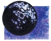
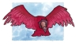

邪恶神祗
以下是六位邪恶神祗的资料。塔克西斯并不在其中，因为她死于灵魂之战末期。

奇魔须（Chemosh）
艾莱斯（Aeleth，亚苟斯），奇魔斯 约顿（Chemos Jotun，冰墙），深渊的卓恩（Dron of the Deep，塔西斯），凯马克斯（Khemax，索巴丁），生命之祸（米萨斯），死亡之君，奥尔克鲁斯特（Orkrust，大地精）
中等神祗
居住位面：无底深渊
徽记：黄色头骨
颜色：黑色和疾病的黄色
天体徽记：黄色山羊头骨星座
阵营：中立邪恶
神职：死亡，亡灵，谋杀
信仰者：疯狂的教徒，死灵法师
牧师阵营：混乱邪恶，守序邪恶，中立邪恶
领域：死亡，邪恶，诡术
偏好武器：镰刀（“灵魂收割者”）
喜好服饰：黑色长袍，白色头骨面具，骨制虔信勋章
作为第一名加入黑暗之后的行列、对抗最高神和创生秩序的的神祗，奇魔须是不死生物的创造者和统治者。奇魔须通过对凡人承诺永恒的“生命”来唤起并活化他们的尸体，同时禁锢他们的灵魂，最后迫使他们成为自己光荣的不死奴隶。
奇魔须对凡人的教诲其实是一套用谎言精心编制的理论，这些教诲让人们站在他一边，并把他自己描绘成冷酷世界中的一位慈善的神祗。他的信徒们（有时甚至包括他的神职人员）所遵守的教义并无必要反映他真正的看法，因为他所宣扬的信仰只是为了欺骗凡人任他所用。
奇魔须的神职人员努力破坏善良神祗的教会所做出的成果，夺走凡人的生命，把他们引导至死亡之君所制造的嘲弄生命的道路中。大部分奇魔须的信徒都在暗中工作，通过对不死的虚假承诺来增加教会的信徒数量。这种隐秘的工作方式也表示奇魔须的教会中没有中心集权的等级制度。许多牧师都占据职位达数代之久，即使在死后他们也可能通过变化为巫妖或其他可怕生物的方法来维持自己的权力。
奇魔须的牧师们在秋分的时候会举行一个神秘的庆祝仪式，以企求他们的主人保护他们免受如同永恒严冬般的死亡的侵袭。一般新加入的信徒会在夜晚被献祭（consecrated）给奇魔须，他们宣誓效忠奇魔须，作为交换他们被告知将可以脱离归于尘土的结局。“重生”的仪式整年可见，那时牧师们可以活化尸体以增强奇魔须的力量。
奇魔须臣服于黑暗之后，他的奴仆们通常也和她的牧师及信徒合作。奇魔须对马哲理有一种特殊的仇恨，因为他以最高神的方式表达信仰、以追求美德的形式表达纪律。
教义
世界由混沌而生，它并无目的，对世界也并无安排。凡人无灵魂。肉体乃一切。死亡乃通向湮灭之门。善良之神以死后生命之辞欺骗并奴役信徒。唯效忠奇魔须方可获得真正无尽生命为回报。

西都凯（Hiddukel）
背叛者（米萨斯），裂缝西塔克斯（Hitax the Flaw，索巴丁），睦’费斯托斯（M’Fistos，伊斯塔），谎言王子，乌斯克-杜（Usk-Do，大地精）
中等神祗
居住位面：无底深渊
徽记：损坏的商用天平
颜色：红色和骨色
天体徽记：损坏的天平星座
阵营：混乱邪恶
神职：财富，盗窃，谎言
信仰者：奸商，盗贼
牧师阵营：混乱邪恶，混乱中立，中立邪恶
领域：邪恶，背叛（*），诡术
偏好武器：匕首（“报复之刺”）
喜好服饰：优良红色丝织长袍，袖子部分带有骨色
西都凯是掌管不义之财和不法交易的神祗，也是奸商和盗贼们的主神。作为一名狡猾的商人，西都凯所做的交易都是出于贪婪。他是诸神之中唯一可以和塔克西斯讨价还价并占得上风（come out ahead）的。西都凯一直以来都在努力确保那些可以用财富换取灵魂的交易的实行。虽然西都凯善于算计并且喜欢暴利，但他通常都伪装成一名善于奉承和愚笨的商人。那些被欺骗而与他进行交易的人也许会得到那些他们认为他们真心渴望的东西，但最终他们会发现，那只会给他们带来灾难。
只有极少的人愿意成为西都凯的神职人员。通常来说人们在受了西都凯蒙骗和耍弄时才会成为他的牧师。西都凯对他的牧师的背信弃义行为会加以赞赏，即使他们所背叛的是他本人。他命令神职人员们不择手段地追求财富，并努力让每个人都参与到所有的交易中。他的牧师通常在合法职业的伪装下秘密行动。大城市中通常拥有众多其信徒的藏身之处。西都凯的牧师们一般过着双重生活，在白天他们的形象是受人尊敬社会成员，而在夜晚他们就组织违法的活动。西都凯的教会只是个名义上的组织。除了夜之主（the Nightmaster）以外，每名牧师都为自己而工作，不断地计划着自己的阴谋并试图以卑劣的手段夺取夜之主的位置。
西都凯的牧师在清晨的时候为法术而祈祷。教会中最重要的纪念日是卖灵之日（the Day of Bartered Souls）。每年西都凯的牧师都必须向他们的神祗展示一个帐簿，上面记录着他所腐化或毁灭的灵魂。那些没有做到的人就必须面对神的暴怒。
西都凯是西那瑞的敌人，而他们之间的仇恨也传递到了信徒们之间。西都凯向那些杀死了西那瑞牧师或摧毁了西那瑞神殿的信徒赐与奖赏，比如奴隶和财宝。西都凯也反对李奥克斯――但贪婪之神的内心其实是怯懦的，所以他并不敢冒险招惹暴躁的矮人之神。
教义
贪婪乃驱动世界之力。否认喜爱金钱实乃谎言。财富乃世界万物之中最重者。无论有何阻碍也要获取财富。谎言使真实有意义。发掘人之最深欲望，即可找到开启其灵魂之钥。

魔吉安（Morgion）
恶疾山羊王（Anthrax Goatlord，大地精），黑色之风，格尔米安（Gormion，塔西斯），拉尔（H’rar，亚苟斯，伊斯塔），魔吉（冰墙），瘟疫（米萨斯）
中等神祗
居住位面：无底深渊
徽记：带有两只红眼的兜帽
颜色：深棕色和黑色
天体徽记：疾病兜帽星座
阵营：中立邪恶
神职：疾病，谋划，苦难
信仰者：疯狂的教徒
牧师阵营：混乱邪恶，守序邪恶，中立邪恶
领域：破坏，邪恶，瘟疫（*）
偏好武器：重型链枷（“疾病之云”）
喜好服饰：带有兜帽的宽大灰色长袍
几乎所有类人种族都畏惧瘟疫、腐朽和疾病之神魔吉安。那些信仰他的人将会被别人咒骂，所以他们只能秘密地传播他们的信念。即使是其他的邪恶神祗也拒绝与他为伍。魔吉安的力量由恐惧而生，所以他运用疾病造成的创伤在凡人之中传播恐惧。魔吉安很少屈尊与他的神职人员谈话。与之相比，他更喜欢在连他们也不知道的情况下进行自己肮脏的工作。
魔吉安居住在无底深渊边缘的一座青铜高塔中。他从不离开塔，也从不揭示自己的计划，即使是对那些负责执行它的人。众多患病的灵魂围绕在他身边。他具有一个正在腐烂的类人生物的形体，既非男性也非女性，却生有一个山羊头。
魔吉安的教会由奴隶组成。魔吉安会等待一个人被疾病所控制，然后提供给他一个选择：以奴役他一生为代价换取疾病的缓解。那些接受了这个条件的人发现他们被魔吉安的力量“治愈”了，但被迫付出的代价通常超出了他们所能承受的范围。之后他们被派遣去散播疾病，为了给魔吉安带来更多追随者。
魔吉安的教徒以一个小单位集结――一般不超过三名神职人员――他们的任务就是向遇到的每一个人传播疾病和苦难。从大城市到小村庄中，从精灵生活的地区到牛头人出没的海岛上都可能发现魔吉安教徒的身影。他们必须秘密工作，因为如果他们被发现，就会有生命危险。最重要的是，他们畏惧米沙凯的牧师，他们是不共戴天的敌人。
魔吉安的教徒有时也被命令研究和制造毒物。魔吉安的教徒的家中通常都有一个小型炼金房，他们可以用它来制造新的强力毒药。在制造那些模仿疾病效果的毒药方面，他们特别在行。夜之主（the Nightmaster）是教会的首领，他可以制造毒性更强的毒药，比如猩红热瘟疫（the Scarlet Plague）。每名牧师的身上带着至少3打可以用来对付敌人的毒粉。魔吉安的牧师在深夜的时候为法术而祈祷。
为了保密的需要，教会并没有圣日或宗教庆典。消灭一名具有特殊意义的敌人对他们来说是很重要的，但还并未重要到值得举行一个特殊的庆祝仪式。
教义
疾病孕生恐惧。恐惧即力量。传播恐惧以获取回报。

努塔瑞（Nuitari）
黑手（巴力佛），黑暗（艾莲），吞噬之暗，夜之剥夺者（米萨斯），不虔者（Ungod，索巴丁）
中等神祗
居住位面：无底深渊
徽记：黑色的圆或球
颜色：黑色
天体徽记：黑月
阵营：守序邪恶
神职：魔法，神秘知识
信仰者：黑袍法师
牧师阵营：守序邪恶，守序中立，中立邪恶
领域：无（不获得神术）
偏好武器：无
喜好服饰：绸制的黑色蒙头斗篷，黑色的天鹅绒帽
努塔瑞是努林塔瑞和索林那瑞的堂兄弟，他是吞噬一切的黑暗，是黑袍叨高等法师的主神（the Black Robe Wizards of High Sorcery）。努塔瑞的主要目标与他的堂亲相同，既在世界上传播魔法――尤其是黑魔法。努塔瑞也致力于引导更多的法师进入黑袍法师会。
努塔瑞并没有自己的牧师组织。而他是作为黑袍法师会的主神而存在，为他们指引魔法之路。努塔瑞教导他的黑袍信徒们魔法是神秘的，它的能量是使人垂涎的。那些想通过魔法获得力量的人通常会被努塔瑞所劝诱，他承诺只要他们信仰他而不是仔细的索林那瑞或者谨慎的努林塔瑞，将会更快地获得更强大的魔法。
黑袍法师并不为努塔瑞庆祝某些圣日，虽然他们对每8天一次的黑月最高位（the High Sanction）十分盼望。在那个时候，他们的力量会达到顶峰。像其他法师一样，努塔瑞的信徒对眼之夜充满了渴望，因为在当夜克莱恩上的整个魔法能量会达到最高，而黑袍法师们也能够用自己最强的力量施展法术。对不信仰努塔瑞的人来说，黑月是一个星空中的一个空洞。对他的信徒来说，黑月的黑色辐射要比银月和红月更加明亮。
努塔瑞是沙苟斯和塔克西斯的儿子，是海洋女神塞波音的双胞胎兄弟。努塔瑞厌恶沙苟斯，因为他不喜欢魔法和那些使用魔法者。努塔瑞对他的母亲塔克西斯也不信任，因为他怀疑她诱惑他的信徒们转而信仰自己。努塔瑞的法师反对索林那瑞的信徒们所追求的目标，但当魔法的存在受到威胁的时候，他们会把这种差异置之不理，而进行协作。
教义
为魔法服务亦为吾服务。魔法即力量，将此机密妥善保管。

沙苟斯（Sargonnas）
阿尔贡（Argon，伊斯塔，亚苟斯），火之使者（海洛），固执的苟斯（Gonnas theWillful，冰墙），基尼斯（Kinis，奎灵那斯提），金萨拉斯（Kinthalas，西瓦那斯提），米萨尔-拉西姆（Misal- Lasim，塔西斯），沙加斯（Sargas，米萨斯），屈服者沙贡克斯（Sargonx the Bender，索巴丁）
高等神祗
居住位面：无底深渊
徽记：常见（Stylized）的红色秃鹫
颜色：红色和黑色
天体徽记：秃鹫星座
阵营：守序邪恶
神职：报复，征服，力量，狂暴
信仰者：牛头人，赏金猎人，战士
牧师阵营：守序邪恶，守序中立，中立邪恶
领域：邪恶，火，秩序，战争
偏好武器：巨斧（“暴怒之角”）
对于安塞隆大陆上的人们来说，沙苟斯是一个神秘的角色。这位喜欢沉思的神祗更喜欢在孤独而隔绝的情况下工作。虽然有时他被迫与其他黑暗神祗结盟，但他并不觉得自己应当对他们履行什么义务。他轻视那些善良神祗，但奇力-乔里思除外，沙苟斯对他勉强还算有点尊敬之意。沙苟斯是一名易怒、好战且奸诈的神祗，他对追随者的要求也很苛刻。
牛头人是他最为喜爱的信徒，他们崇敬他胜过其他任何神祗。他们称他为沙加斯并相信他具有牛头人的外表。对他们而言，沙加斯象征着那种靠强壮的身体获得而靠荣誉维持的力量。牛头人对任何声称信仰沙苟斯的人类或其他种族生物都持鄙视的态度，他们通常会拒绝承认那些人所信仰的神就是沙加斯。
沙苟斯的大多数非牛头人信徒都把他看做是复仇之神。他的神职人员通常来自于那些遭受别人不公正对待而希望通过非法手段进行报复的人。赏金猎人们一般都信仰沙苟斯。
阿尔贡月（Z注：亚苟斯地区的七月）的第一天是沙苟斯信徒们最神圣的日子。就是在那天牛头人成为了沙苟斯所眷顾的种族，推翻了卡尔-萨克斯矮人（那些奴役了他们的人），并屠杀了该地区的所有矮人。虽然这一节日最早只有牛头人庆祝，但它也逐渐被沙苟斯的非牛头人信徒所接纳，他们所庆祝的是力量产生强权的信仰。
沙苟斯是塔克西斯的配偶，尽管即使在她死亡以前两个人也十分疏远。他们的孩子是赛波音和努塔瑞。
教义
向那些对你不公的人宣泄你的仇恨。弱者在社会中无立足之地。力气即权力。通过力量获得权力，通过荣誉维护权力。忠于那些忠于你的人。毁灭那些背叛你的人。绝不要心软，仁慈会使你与你的敌人皆蒙羞。

赛波音（Zeboim）
恐怖之海，大旋涡（米萨斯），拉恩（Rann，亚苟斯），赛比尔 约顿（Zebir Jotun，冰墙），旋涡祖拉（Zura the Maelstrom，海精灵），赛尔（Zyr，塔西斯）
中等神祗
居住位面：无底深渊
徽记：龟背图案
颜色：绿色和红色
天体徽记：龙龟星座
阵营：混乱邪恶
神职：海洋，风暴，嫉妒
信仰者：海员，海盗，邪恶德鲁伊
牧师阵营：混乱邪恶，混乱中立，中立邪恶
领域：混乱，邪恶，风暴（*），水
偏好武器：三叉矛（“三位一体”）
喜好服饰：容易丢弃的长袍，上面带有以大海为主题的纹章装饰物
对于那些生活在陆地上的生物来说，她很少为人所知，对那些活动于海洋中的生物来说，她普遍地受到敬畏，她就是海洋和风暴女神赛波音。情绪化而任性的她可能会突然暴怒，使海上充满惊涛骇浪，并把船沉入海底。她是反复无常的，但如果水手们为她呈献了合适的祭物，她也会平和。赛波音代表了大海无情而暴乱的本质，虽然她也有短暂的平静时光。
赛波音的神职人员也具有他们女神的两面性。他们大多只会进行勒索，以企求好天气为名，迫使海员和船主交纳赋税。在陆地上的时候，无论天气如何，赛波音的传教士们每天早晨都要进行一个仪式性的游泳活动，以祈祷获得法术。在船上，赛波音的传教士是非常受欢迎的编外人员，他们会带领水手们进行祈祷并为海洋之后献上祭品。船上的教士们在日落时为法术而进行祈祷。
信徒的大多数圣日都是一个在诺德玛和血海地区充斥着猛烈的雷暴和龙卷风的日子。赛波音的传教士聚集在海岸上举行祭祀，以彰显海洋之后保护所有海洋和海边生物的功绩。
赛波音对其他神祗并不怎么注意。但哈巴库克是一个例外，因为他控制着所有的深海生物――赛波音觉得那本应是由她独自统治的。这两位神祗互相憎恶，并不断地爆发战争，据说不停撞击海岸的波浪就是由这种永恒的战争所创造的。赛波音对她的父亲沙苟斯有些忽冷忽热，有时她会寻求他的宠爱和他的牛头人水手的支持，有些时候则会轻视他并把他的信徒杀死在汪洋大海中。赛波音总是小心地避免与母亲塔克西斯的分歧，但是至少在艾瑞阿肯死亡以后，她已经开始怀疑母亲对混沌之战的许诺了。
教义
人们景仰并畏惧狂暴。如无海洋之后之意愿，任何水手亦非性命无忧，因此信仰她并多献祭礼。最终海洋将吞噬一切，一切陆地将臣服于赛波音之力。崇敬她，否则丧生于风暴之中。